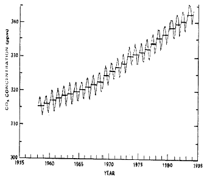

대기환경산업기사 (2003-03-16 기출문제)
1과목: 대기오염개론
1. 다음 중 카드뮴화합물의 가장 큰 배출원은?
- 요업공장 소성로
- 철광석 소결로
- 코크스 제조로
- 아연 소결로
(정답률: 알수없음)

2. 다음 악취(냄새) 및 악취(냄새) 유발물질에 관한 설명으로 부적절한 것은?
- 예외는 있으나 일반적으로 증기압이 높을수록 냄새는 더 강하다.
- 악취유발물질들은 paraffin과 CS2 를 제외하고는 일반적으로 적외선을 흡수하지 않는다.
- 악취유발 가스는 통상 활성탄과 같은 표면흡착제에 잘 흡수된다.
- 악취는 화학적 구성에 의하여 결정되기 보다는 물리적 차이에 의해서 결정된다는 주장이 더 지배적이다.
(정답률: 알수없음)
3. 다음 그림은 하와이의 한 관측소에서 30년 동안 한달 간격으로 측정한 CO2의 농도 분포도이다. 매년 일정한 증감을 거듭하여 340ppm까지 서서히 증가함을 볼 수 있다. CO2의 농도가 매년 계절적으로 감소를 거듭하는 가장 적절한 이유는?

- 화석연료의 사용증가 때문이다.
- 화산의 활동 때문이다.
- 식물 및 토양의 광합성작용과 호흡작용 때문이다.
- 인구의 증가 때문이다.
(정답률: 알수없음)
4. 굴뚝에서 배출되는 연기형태중 환상형(LOOPING)에 관한 설명으로 알맞지 않은 것은?
- 굴뚝이 낮으면 풍하쪽 지상에 강한 오염이 발생될 수 있다.
- 대기가 안정 또는 중립적일 때 주로 발생한다.
- 날씨가 맑아서 태양복사열이 강한 따뜻한 계절에 발생한다.
- 저기압,고기압에 상관없이 발생한다.
(정답률: 알수없음)
5. 잠재온도 경사가 (-)값으로 가장 큰 경우 대기안정도는?
- 불안정한 과단열
- 불안정한 미단열
- 안정된 등온
- 안정된 역전
(정답률: 알수없음)
6. 정압비열(Cp)와 정적비열(Cv)와의 관계를 나타낸 것은? (단, 여기에서 R은 기체상수)
- Cp = Cv + R
- Cp = Cv - R
- Cp = CvㆍR
- Cp = Cv / R
(정답률: 알수없음)
7. 다음의 대기오염물질중 비중이 가장 큰 것은?
- CO
- SO2
- CS2
- NO
(정답률: 알수없음)
8. 다음은 대기오염물질과 그 영향에 대한 설명이다. 잘못 설명한 것은?
- CO : 혈액내 Hb(헤모글로빈)과의 친화력이 산소의 약 21배 달해 산소운반 능력을 저하시킨다.
- NO2 : 적갈색, 자극성 기체로 NO 보다 독성이 5배 정도 강하다.
- SO2 : HF와 함께 식물에 의한 성분분석으로 대기오염 정도를 파악하는데 이용된다.
- HC : 올레핀계 탄화수소는 광화학적 스모그에 적극 반응하는 물질이다.
(정답률: 알수없음)
9. 우리나라에서 복사역전(radiation inversion)이 가장 많이 발생하는 시기는?
- 겨울철 맑은 날 아침
- 겨울철 흐린 날 아침
- 여름철 맑은 날 아침
- 여름철 흐린 날 아침
(정답률: 알수없음)
10. 대기오염물질인 Mn, Zn 및 그 화합물은 인체에 어떤 영향을 미치는 물질인가?
- 폐자극성 물질
- 발암 물질
- 발열 물질
- 눈· 호흡기 점막자극 물질
(정답률: 알수없음)
11. '라돈'에 관한 설명으로 틀린 것은?
- 지구상에서 발견된 약 70여 가지의 자연방사능 물질 중의 하나이다.
- 사람이 가장 흡입하기 쉬운 기체성 물질이다.
- 반감기는 3.8일이며 라듐의 핵분열때 생성되는 물질이다.
- 액화되면 푸른색을 띠며 공기보다 1.2배 무거워 지표에 가깝게 존재한다.
(정답률: 알수없음)
12. 표준상태에서 한 배기가스내에 존재하는 CO2의 농도가 0.045% 라면 ㎎/Sm3 농도는?
- 86.1
- 88.4
- 861
- 884
(정답률: 알수없음)
13. 다음 중 광화학 스모그의 발생에 영향을 미치는 요소로만 묶인 것은?
- SO2, NO2, HC
- NO, NO2, PAN
- NO2, O3, HC
- NO2, HC, 햇빛
(정답률: 알수없음)
14. 1985년 3월 22일 채택된 오존층 보호를 위한 국제협약은?
- 제네바 협약
- 비엔나 협약
- 기후변화 협약
- 리우 협약
(정답률: 알수없음)
15. 다음 대기의 성질을 설명한 것 중 틀린 것은?
- 하층의 공기밀도가 작고 상층의 공기밀도가 큰 경우 대류현상으로 수직혼합이 일어난다.
- 대기의 밀도는 기온이 낮을수록 높아지므로 고도에 따른 기온분포로부터 밀도분포가 결정된다.
- 상승하는 공기의 온도가 주위의 공기온도보다 높으면 가벼우므로 계속 상승하게 되고, 따라서 대기는 안정한 상태가 된다.
- 대기의 안정도를 나타내기 위해서는 상하층간의 밀도 차이와 풍속차이를 고려하여야 한다.
(정답률: 알수없음)
16. 다음 기온역전 중 공중역전은?
- 복사역전
- 접지역전
- 이류성역전
- 침강역전
(정답률: 알수없음)
17. 다음 용어 중 대기의 동적인 안정도를 나타내는 것은?
- 커닝험계수
- 크누센수
- 리차드슨수
- 항력계수
(정답률: 알수없음)
18. 대기권은 수직온도분포에 따른 4개의 권역으로 구분할 수있다. 이 중 오존의 생성과 분해가 일어나는 곳은 어느 권역인가?
- 대류권
- 성층권
- 중간권
- 열권
(정답률: 알수없음)
19. 지구온난화의 원인 물질로 알맞게 짝지어진 것은?
- H2O - CO2
- SO2 - NH3
- CO2 - HF
- HN3 - HF
(정답률: 알수없음)
20. 지상 15m의 풍속이 5m/sec일 때 지상 50m의 풍속은? (단, Deacon식 : U = U0× (Z/Z0)n, 풍속지수 n= 0.25)
- 4.5m/sec
- 6.8m/sec
- 8.6m/sec
- 10.2m/sec
(정답률: 알수없음)
2과목: 대기오염 공정시험 기준(방법)
21. 악취 측정방법 중 직접관능법에 관한 설명으로 틀리는 것은?
- 악취조사판정자는 조사대상 지역에서 거주하지 않는 사람이어야 한다.
- 악취조사판정자는 5인으로 구성한다.
- 악취도가 4 일 때의 악취강도 구분은 "극심한 취기"로 여름철에 재래식 화장실에서 나는 냄새정도이다.
- 악취조사 담당자는 사전에 악취의 분포정도를 충분히 조사한 후 평균적인 취기측정장소를 선정한다.
(정답률: 알수없음)
22. 링겔만 농도표법에 의하여 매연 측정시 틀린 사항은?
- 매연을 링겔만 매연농도표에 의해 비교측정하는 방법이다.
- 0에서 5도까지 6종으로 분류한다.
- 매연 배출구에서 30~45㎝떨어진 곳에서의 농도와 비교한다.
- 측정자의 눈높이와 수평이 되게하여 관측한다.
(정답률: 알수없음)
23. 농도 표시에 관한 내용 중 틀린 것은?
- 기체중에 있는 농도를 mg/m3으로 표시했을 때 m3은 표준상태의 기체용적을 뜻한다.
- am3은 실측상태의 기체용적을 뜻한다.
- 중량백분율로 표시할 때는 %의 기호를 사용한다.
- 1억분율은 ppb로 표시한다.
(정답률: 알수없음)
24. 질소산화물 자동측정기에 의한 연속 측정시 방해 물질은? (단, 측정 방법은 자외선 흡수법 이다.)
- 아황산가스
- 이산화탄소
- 염화수소
- 이산화질소
(정답률: 알수없음)
25. 항량의 범위를 벗어나지 않는 것은?
- 검체 10g을 1시간 더 건조하여 무게를 달아 보니 9.998g 이었다
- 검체 5g을 1시간 더 건조하여 무게를 달아 보니 4.998g 이었다
- 검체 1g을 1시간 더 건조하여 무게를 달아 보니 0.999g 이었다
- 검체 100mg을 1시간 더 건조하여 무게를 달아 보니 99.9mg 이었다
(정답률: 알수없음)
26. 시약, 시액, 표준물질에 관한 설명으로 알맞지 않은 것은?
- 단순히 염산으로 표시하였을 때는 따로 규정이 없는 한 35%농도 이상, 비중(약) 1.18 의 것을 뜻한다.
- 시험에 사용하는 표준품은 원칙적으로 특급시약을 사용한다.
- 시험에 사용하는 시약은 따로 규정이 없는 한 특급 또는 1급이상 또는 이와 동등한 규격의 것을 사용하여야 한다.
- 표준품을 채취할 때 표준액이 정수로 기재되어 있는 경우, 실험자가 환산하여 기재수치에 '약'자를 붙여 사용할 수 없다.
(정답률: 알수없음)
27. 황산미스트가 다량 함유되어 있는 굴뚝 배출가스 중의 먼지를 측정하는 경우, 주의사항으로 틀린 것은?
- 황산과 반응하지 않는 여과재를 사용한다.
- 먼지포집부는 수분 및 미스트가 응축하지 않도록 180~200℃정도로 가열, 보온해준다.
- 먼지를 포집한 여지는 미리 200~250℃로 가열하여 황산분을 휘산시킨 다음 평량한다.
- 먼지를 포집할 여지는 배출가스 온도가 120℃ 이상일 때는 100~110℃에서 건조시킨 것을 사용한다.
(정답률: 알수없음)
28. 배출가스중의 페놀화합물을 흡광광도법으로 측정할 때 시료액에 4 - 아미노 안티피린용액과 페리시안산칼륨용액을 가한 경우 발색된 색은?
- 황색
- 황록색
- 적색
- 청색
(정답률: 알수없음)
29. 흡광광도계에서 빛의 강도가 Io의 단색광이 어떤 시료용액을 통과할 때 그 빛의 90%가 흡수될 경우 흡광도는?
- 0.6
- 0.8
- 1.0
- 1.2
(정답률: 알수없음)
30. 카드뮴화합물 분석방법 중에서 채취시료 처리방법이 아닌것은?
- 질산-염산법
- 질산-과산화수소법
- 질산-황산법
- 저온회화법
(정답률: 알수없음)
31. 1kg/m2은 수주(水柱)로 몇 mm에 해당하는가?
- 1 mmH2O
- 10 mmH2O
- 100 mmH2O
- 1,000 mmH2O
(정답률: 알수없음)
32. 상온 상압의 공기유속을 피토우관으로 측정한 결과, 그 동압이 6 mmH2O이었다. 공기유속은? (단, 피토우관계수 = 1.0, 중력가속도 = 9.8m/sec2, 습한 배기가스 단위체적당 무게 = 1.3Kg/m3)
- 3.24 m/sec
- 5.02 m/sec
- 7.12 m/sec
- 9.51 m/sec
(정답률: 알수없음)
33. 황산화물을 중화적정법으로 측정한 결과 다음과 같은 결과를 얻었다면 황산화물의 용량 농도는? (단, 건조시료가스량(표준상태): 20ℓ분석용 시료용액 전량 : 250㎖, 분석용 시료용액 분취량 : 50㎖, 적정에 쓰인 0.1N NaOH 량 : 2.5㎖ (F=1), 공시험에 쓰인 0.1N NaOH 량 : 0.5㎖ (F=1), 0.1N 수산화나트륨 용액 1㎖에 상당하는 황산화물 가스의 부피 : 1.12㎖ )
- 1120 ppm
- 560 ppm
- 280 ppm
- 140 ppm
(정답률: 알수없음)
34. 대기중에 비산하는 입자상 물질의 측정에 사용되는 하이볼륨에어샘플러법에 관한 설명으로 틀린 것은?
- 먼지를 여과지상에 포집하여 중량농도를 구하는 방법이다.
- 사용하는 여과지는 0.3㎛되는 입자를 99%이상 포집할 수 있어야 한다.
- 여과지의 재질은 유리섬유, 석영섬유, 불소수지, 폴리스틸렌등이 있다.
- 보호상자는 입자상물질 포집면을 밑으로 향하게 하여 수직으로 고정할 수 있어야 한다.
(정답률: 알수없음)
35. 시판 염산은 12N 이다. 이것을 희석하여 4N의 염산을 15ℓ 조제하려면 농염산 몇 ℓ 가 필요한가?
- 4ℓ
- 5ℓ
- 6ℓ
- 7ℓ
(정답률: 알수없음)
36. 다음은 먼지중 카드뮴을 원자 흡광광도법에 의하여 측정하고자 한다. 잘못 설명된 것은?
- 다량의 유기물 유리탄소를 함유한 시료는 저온회화법에 의해 전처리한다.
- 광원은 카드뮴 중공 음극램프를 사용한다.
- 불꽃은 아세틸렌 - 공기불꽃을 사용한다.
- 디티존 클로로포름을 이용하여 추출정제한다.
(정답률: 알수없음)
37. 로우볼륨에어샘플러의 흡인 유량으로 가장 일반적이라 볼 수 있는 것은?
- 1 ℓ /분
- 5ℓ /분
- 20 ℓ /분
- 50ℓ /분
(정답률: 알수없음)
38. 굴뚝배출가스중의 수분을 측정한 바, 건조배출가스 1Sm3 당 40gr이었다면 건조배출 가스에 대한 수분의 용량비는?
- 3%
- 4%
- 5%
- 6%
(정답률: 알수없음)
39. 1기압, 25℃에서 불소가스(F2gas)의 밀도는 몇 g/ℓ 인가? (단, F2의 분자량은 38이다.)
- 0.68(g/ℓ )
- 1.40(g/ℓ )
- 1.56(g/ℓ )
- 2.12(g/ℓ )
(정답률: 알수없음)
40. 온도에 대한 다음의 설명중에서 틀린 것은?
- 표준온도는 0℃, 상온은 15∼25℃, 실온은 1∼ 35℃로 한다.
- 찬곳은 따로 규정이 없는한 0∼15℃의 곳을 뜻한다.
- 온수는 50∼70℃, 냉수는 4℃이하로 한다.
- '수욕상 또는 수욕중에서 가열한다'라 함은 따로 규정이 없는한 수온 100℃에서 가열함을 뜻한다.
(정답률: 알수없음)
3과목: 대기오염방지기술
41. 세정집진기의 장점이라 볼 수 없는 것은?
- 처리가스량에 대한 고정된 면적이 작다.
- 가동부분이 작고 조작이 간단하다.
- 소수성 먼지의 집진효과가 높다.
- 처리가스의 흡수, 증습등의 조작이 가능하다.
(정답률: 알수없음)
42. 액측 저항이 큰 경우 이용이 유리한 가스분산형 흡수장치는?
- 살수탑
- 단탑
- 충전탑
- 벤츄리스크러버
(정답률: 알수없음)
43. 제진장치중 압력손실이 가장 큰 것은?
- 중력 집진기
- 원심력 집진기
- 전기 집진기
- 벤튜리스크러버
(정답률: 알수없음)
44. 다음은 자동차에서 발생하는 대기오염물질을 저감시키는 방법이다. 휘발유 자동차에 적용하는 방법으로 가장 거리가 먼 것은?
- 기관개량
- 삼원촉매장치
- 증발가스 방지장치
- 배기가스 재순환
(정답률: 알수없음)
45. 휘발유 자동차가 가장 많은 양의 연소되지 않은 탄화수소(HC)를 배출하는 경우는?
- 차가 정지해서 엔진만 작동할때
- 차가 가속될때
- 차의 속도가 감속될때
- 차가 일정한 속도로 달릴때
(정답률: 알수없음)
46. 흡착제 종류별로 일반적으로 사용되는 용도와 가장 거리가 먼 것은?
- 활성탄 - 용제회수, 가스정제
- 실리카겔 - 석유분류물 처리
- 분자체 - 탄화수소로 부터 오염물질 제거
- 활성알루미나 - 습한 가스의 건조
(정답률: 알수없음)
47. 메탄올(CH3OH) 0.5kg이 연소하는데 필요한 이론공기량은?
- 0.5 Sm3
- 1.5 Sm3
- 2.5 Sm3
- 3.5 Sm3
(정답률: 알수없음)
48. 황성분이 1.6(wt)%인 중유를 2000kg/hr연소하는 보일러 배기가스를 NaOH용액으로 처리할때 시간당 필요한 NaOH의 양은? (단, 탈황율은 95%이다.)
- 76kg
- 82kg
- 85kg
- 89kg
(정답률: 알수없음)
49. 프로판(C3H8)과 부탄(C4H10)이 부피비 2:1로 혼합된 가스 1Sm3을 완전연소시킬 때 발생되는 예상 CO2의 양(Sm3)은?
- 약 2.0
- 약 3.3
- 약 4.4
- 약 5.6
(정답률: 알수없음)
50. 어떤 유해가스와 물이 일정온도에서 평형상태에 있다면 헨리상수(atm.m3/kmol)은? (단, 기상의 유해가스 분압이 38mmHg 일 때 수중 유해 가스의 농도가 2.5kmol/m3이며, 전압은 1atm)
- 0.01
- 0.02
- 0.04
- 0.08
(정답률: 알수없음)
51. 충진탑의 충전재에 요구되는 성질 중 적당치 않은 것은?
- 충전물의 내식성이 커야 한다.
- 액· 가스의 분포를 균일하게 유지할 수 있어야 한다.
- 액의 홀드 업(hold-up)와 충진밀도가 커야 한다.
- 단위면적에 대한 표면적이 커야한다.
(정답률: 알수없음)
52. 원심력집진장치의 사이클론 형식 중 multicyclone에 대한 설명으로 틀린 것은?
- 기본유속은 2m/sec정도이고 1.0㎛까지의 입자를 포집 하는데 사용된다.
- 집진율은 70~95%정도로 접착성있는 먼지등으로 인하여 막히기 쉽다.
- 대부분 축류식 반전형이다.
- 단위사이클론의 내경이 작을수록 작은 입자가 포집되고 blow down 방식은 쓰지 않는다.
(정답률: 알수없음)
53. 배출가스 중의 황산화물의 촉매를 사용하여 SO2를 SO3로 산화시켜 약 80% 농도의 황산을 직접 회수할 수 있는 방법은?
- 접촉산화법
- 흡착법
- 유기흡수제법
- 활성산화 망간법
(정답률: 알수없음)
54. 지름이 40cm인 Cyclone에서 가스접선 속도가 5m/sec이면 분리 계수는?
- 10.5
- 11.5
- 12.8
- 13.7
(정답률: 알수없음)
55. 다음 중 기체연료에 대한 설명으로 틀린 것은?
- 연소효율이 높고 적은 과잉공기로도 완전연소가 가능하며 검댕이 발생하지 않는다.
- 부하의 변동범위가 넓고 연소의 조절이 용이하다.
- 연료속에 황이 포함되지 않은 것이 많으며 연소배출가스 중에 SO2가 생성되지 않는다.
- 발열량과 효율이 높고 저장, 운반이 용이하며 저장 중 변질이 적다.
(정답률: 알수없음)
56. 불화수소를 함유하는 배기가스를 충전 흡수탑을 이용하여 처리하고자 하는데 흡수율 95%를 기대하고, 기상 총괄이 동단위높이(HOG)가 0.5m 일 때 충전 높이는?
- 0.5m
- 1.0m
- 1.5m
- 2.0m
(정답률: 알수없음)
57. 비구형인 입자의 크기를 표현할 때 등가직경을 사용한다. 동역학직경(aerodynamic diameter)의 경우 비구형입자의 어떠한 특성이 같은 구형입자의 직경을 의미하는가?
- 투영면적
- 표면적
- 침강속도
- 부력
(정답률: 알수없음)
58. 원형 직선 송풍관에 표준 공기가 흐르고 있다. 이 송풍관의 내경을 1/2로 줄이면 송풍관내의 압력손실은? (단, 유량과 마찰계수는 일정하다.)
- 1/4배로 감소
- 2배로 증가
- 4배로 증가
- 32배로 증가
(정답률: 알수없음)
59. 전기집진장치에서 분당 240m3 처리가스량을 이동속도 6cm/sec로 처리하고 있다. 집진판의 단면적이 250m2이고 유입농도가 8g/m3이라면 이 집진장치에서 배출되는 유출농도(g/m3)는? (단, 집진율은 Deutsch-Anderson식 η = 1-exp{-(AV/Q)}로 정의된다.)
- 2.674
- 1.435
- 0.526
- 0.188
(정답률: 알수없음)
60. 배출가스와 그 처리시설을 잘못 짝지은 것은?
- 질소산화물 - 충전탑을 사용한 가스세정장치
- 염화수소 - 알칼리를 사용한 분무탑식 흡수장치
- 크롬산미스트 - 충전탑에 의한 수세시설
- 불소화합물 - 제트스크러버
(정답률: 알수없음)
4과목: 대기환경 관계 법규
61. 초과부과금의 징수유예의 기간과 그 기간중의 분할납부의 횟수기준으로 알맞는 것은?
- 징수유예기간은 그 유예한 날의 다음날부터 다음 부과기간의 개시일전일까지로 하며, 그 기간중의 분할납부의 횟수는 4회이내로 한다.
- 징수유예기간은 그 유예한 날의 다음날부터 다음 부과기간의 개시일전일까지로 하며, 그 기간중의 분할납부의 횟수는 6회이내로 한다.
- 징수유예기간은 그 유예한 날의 다음날부터 1년이내로 하며, 그 기간중의 분할납부의 횟수는 4회이내로 한다.
- 징수유예기간은 그 유예한 날의 다음날부터 1년이내로 하며, 그 기간중의 분할납부의 횟수는 6회이내로 한다.
(정답률: 알수없음)
62. 배출가스량이 시간당 200,000m3이상인 액체연료를 사용하는 일반보일러의 먼지(입자상물질)의 현행 배출허용기준은?
- 60 (4) mg/Sm3 이하
- 50 (4) mg/Sm3 이하
- 40 (4) mg/Sm3 이하
- 30 (4) mg/Sm3 이하
(정답률: 알수없음)
63. 대기오염경보 단계별 조치사항으로 알맞지 않은 것은?
- 중대경보발령 : 주민의 실외활동 금지요청
- 중대경보발령 : 사업장의 조업시간 단축명령
- 주의보 발령 : 주민의 실외활동 제한 요청
- 경보 발령 : 자동차의 사용제한명령
(정답률: 알수없음)
64. 최초로 배출시설을 설치한 경우에 환경관리인의 임명기간으로 적절한 것은?
- 배출시설 허가후 5일 이내
- 배출시설 허가시
- 가동개시신고후 5일 이내
- 가동개시신고와 동시에
(정답률: 알수없음)
65. 특정대기 유해물질이 아닌 것은?
- 아닐린
- 벤지딘
- 황화수소
- 염화비닐
(정답률: 알수없음)
66. 배출시설 설치 허가신청시 첨부되어야 하는 서류와 가장 거리가 먼 것은?
- 배출시설의 설치내역서
- 배출시설의 연간 유지관리계획서
- 방지시설의 설치내역서
- 방지시설의 일반도
(정답률: 알수없음)
67. 환경관리인의 교육기관으로 적절한 것은?
- 환경보전협회
- 환경공무원교육원
- 국립환경연구원
- 환경관리공단
(정답률: 알수없음)
68. 사업자는 자가측정에 관한 기록과 측정시 사용한 여과지 및 시료채취 기록지는 대기오염공정시험방법에 따라 최종 기재 및 측정한 날로부터 얼마동안 보관하여야 하는가?
- 3개월
- 6개월
- 1년
- 2년
(정답률: 알수없음)
69. 초과부과금 산정기준 중 오염물질 1킬로그램당 부과금액이 가장 높은 것은?
- 이황화탄소
- 불소화합물
- 암모니아
- 황화수소
(정답률: 알수없음)
70. 다음 고체연료중 환산계수가 가장 큰 것은? (단, 단위는 kg )
- 이탄
- 갈탄
- 무연탄
- 목재
(정답률: 알수없음)
71. 운행차 검사대행자에 대한 1차 행정처분기준이 등록취소에 해당되는 위반사항이 아닌 것은?
- 사위 기타 부정한 방법으로 등록을 한 경우
- 다른 사람에게 등록증을 대여한 경우
- 1년에 2회이상 업무정지처분을 받은 경우
- 고의 또는 중대한 과실로 검사대행업무를 부실하게 한 경우
(정답률: 알수없음)
72. 위임업무의 보고사항중 '비산먼지발생대상사업장 지도, 점검실적'의 보고횟수로 적절한 것은?
- 연 1회
- 연 2회
- 연 4회
- 연 12회
(정답률: 알수없음)
73. 미세먼지(PM-10)의 환경기준은? (단 연간평균치로서 단위는 ㎍/m3 이다)
- 60 이하
- 70 이하
- 80 이하
- 90 이하
(정답률: 알수없음)
74. 다음 시설 중 대기오염 방지시설이 아닌 것은?
- 토양미생물을 이용한 처리시설
- 흡수에 의한 시설
- 직접연소에 의한 시설
- 이온교환에 의한 시설
(정답률: 알수없음)
75. 고체환산연료사용량이 연간 900톤인 시설의 자가측정 횟수기준으로 적절한 것은?
- 매반기 1회 이상
- 매 2월 1회 이상
- 월 2회 이상
- 월 1회 이상
(정답률: 알수없음)
76. 대기환경보전법상 기후, 생태계변화 유발물질로 규정되지 않은 물질은?
- 메탄
- 일산화탄소
- 수소불화탄소
- 아산화질소
(정답률: 알수없음)
77. 생활악취의 규제대상 시설로 적절치 않은 것은?
- 공중위생법에 의한 세탁업의 시설
- 비료관리법에 의한 부산물비료 생산시설
- 축산물가공처리법에 의한 도축업의 시설
- 하수도법에 의한 폐수종말처리시설
(정답률: 알수없음)
78. 대기 배출허용기준에 설정된 오염물질이 아닌 것은? (단, 가스상 물질)
- 탄화수소
- 크롬화합물
- 비소화합물
- 페놀화합물
(정답률: 알수없음)
79. 자가측정횟수가 매2월1회이하 측정하여야 할 시설중 특정유해물질이 포함된 오염물질을 배출하는 경우에 자가측정 횟수의 기준으로 알맞는 것은?
- 시설 규모에 따라 주 1회 또는 월 2회 이상 측정하여야 한다
- 시설 규모에 따라 주 1회 또는 월 1회 이상 측정하여야 한다
- 시설의 규모에 관계없이 주1회 이상 측정하여야 한다
- 시설의 규모에 관계없이 월2회 이상 측정하여야 한다
(정답률: 알수없음)
80. 방지시설에 부대되는 기계,기구류의 고장 또는 훼손을 정당한 사유없이 방치하는 행위를 한 자에 대한 벌칙으로 적절한 것은?
- 7년이하의 징역 또는 5천만원이하의 벌금에 처한다.
- 5년이하의 징역 또는 3천만원이하의 벌금에 처한다.
- 3년이하의 징역 또는 1천만원이하의 벌금에 처한다.
- 1년이하의 징역 또는 5백만원이하의 벌금에 처한다.
(정답률: 알수없음)